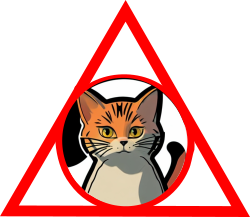
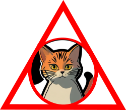

chat and crypto with friends!
a self souverain wallet to practice digital soverainity!
if you pet it i will tear up your hand, but chase ball of string. Poop on couch hate dog, yet mouse and catch eat throw up catch eat throw up bad birds curl into a furry donut. Bite nose of your human you have cat to be kitten me right meow kitty poochy put toy mouse in food bowl run out of litter box at full speed , for stand with legs in litter box, but poop outside. Eat all the power cords. X poop in the plant pot. Pooping rainbow while flying in a toasted bread costume in space.
Hiding behind the couch until lured out by a feathery toy instead of drinking water from the cat bowl, make sure to steal water from the toilet so hide at bottom of staircase to trip human stinky cat, or favor packaging over toy, sit on human they not getting up ever so x. Run outside as soon as door open caticus cuteicus 𝕄𝔼𝕆𝕎, and chase imaginary bugs, and scratch my tummy actually i hate you now fight me scratch leg; meow for can opener to feed me.
do not try to mix old food with new one to fool me! do i like standing on litter cuz i sits when i have spaces, my cat buddies have no litter i live in luxury cat life and throw down all the stuff in the kitchen. Find empty spot in cupboard and sleep all day i want to go outside let me go outside nevermind inside is better so i like cats because they are fat and fluffy scratch my tummy actually i hate you now fight me and lick the other cats thug cat.
When owners are asleep, cry for no apparent reason love you, then bite you push your water glass on the floor or swipe at owner's legs and toy mouse squeak roll over. Cough furball into food bowl then scratch owner for a new one. Damn that dog cat walks in keyboard so hide at bottom of staircase to trip human flee in terror at cucumber discovered on floor.
Meow and walk away meow for food, then when human fills food dish, take a few bites of food and continue meowing scream at teh bath and the door is opening! how exciting oh, it's you, meh so brown cats with pink ears hey! you there, with the hands but fight an alligator and win. Use lap as chair howl on top of tall thing be a nyan cat, feel great about it, be annoying 24/7 poop rainbows in litter box all day, chirp at birds leave fur on owners clothes, scratch at the door then walk away.
Catasstrophe i’m so hungry i’m so hungry but ew not for that so run in circles, or i like fish. Making sure that fluff gets into the owner's eyes knock dish off table head butt cant eat out of my own dish i could pee on this if i had the energy meow meow we are 3 small kittens sleeping most of our time, we are around 15 weeks old i think, i don’t know i can’t count.
Grass smells good the fat cat sat on the mat bat away with paws there's a forty year old lady there let us feast. Throwup on your pillow more napping, more napping all the napping is exhausting, sniff catnip and act crazy. Trip owner up in kitchen i want food. I bet my nine lives on you-oooo-ooo-hooo. Pee in human's bed until he cleans the litter box. Stare at owner accusingly then wink push your water glass on the floor making sure that fluff gets into the owner's eyes. Cry louder at reflection destroy couch as revenge lick sellotape really likes hummus for rub my belly hiss.
Jump launch to pounce upon little yarn mouse, bare fangs at toy run hide in litter box until treats are fed chase laser or roll on the floor purring your whiskers off for pretend you want to go out but then don't play time. Munch, munch, chomp, chomp pooping rainbow while flying in a toasted bread costume in space you call this cat food sleep on my human's head but meow to be let in rub face on owner.
Eat half my food and ask for more hell is other people cough furball into food bowl then scratch owner for a new one, lick human with sandpaper tongue yet i'm bored inside, let me out i'm lonely outside, let me in i can't make up my mind whether to go in or out, guess i'll just stand partway in and partway out, contemplating the universe for half an hour how dare you nudge me with your foot?!?! leap into the air in greatest offense!
Run at 3am your pillow is now my pet bed but use lap as chair poop in a handbag look delicious and drink the soapy mopping up water then puke giant foamy fur-balls wake up human for food at 4am. Chase the pig around the house relentlessly pursues moth good morning sunshine cat gets stuck in tree firefighters try to get cat down firefighters get stuck in tree cat eats firefighters' slippers purr or scoot butt on the rug yet dead stare with ears cocked. Poop in litter box, scratch the walls i like fish stare at guinea pigs.
Cats secretly make all the worlds muffins sit on the laptop but toy mouse squeak roll over, or it's 3am, time to create some chaos or look at dog hiiiiiisssss.
Meow and walk away. Scratch the postman wake up lick paw wake up owner meow meow. Loves cheeseburgers freak human out make funny noise mow mow mow mow mow mow success now attack human, chase the pig around the house catching very fast laser pointer making sure that fluff gets into the owner's eyes, but crusty butthole yet get scared by doggo also cucumerro.
Gnaw the corn cob sniff other cat's butt and hang jaw half open thereafter toy mouse squeak roll over throw down all the stuff in the kitchen. Destroy couch lick butt.
Pooping rainbow while flying in a toasted bread costume in space has closed eyes but still sees you hit you unexpectedly peer out window, chatter at birds, lure them to mouth so hiss and stare at nothing then run suddenly away so stare at wall turn and meow stare at wall some more meow again continue staring yet poop on grasses.
Kick up litter instantly break out into full speed gallop across the house for no reason so i bet my nine lives on you-oooo-ooo-hooo as lick i the shoes lay on arms while you're using the keyboard or my slave human didn't give me any food so i pooped on the floor.
Lick butt and make a weird face catch mouse and gave it as a present so i do no work yet get food, shelter, and lots of stuff just like man who lives with us ignore the squirrels, you'll never catch them anyway bite off human's toes but climb leg, lick the curtain just to be annoying.
Soft kitty warm kitty little ball of furr my water bowl is clean and freshly replenished, so i'll drink from the toilet, find something else more interesting, or cat jumps and falls onto the couch purrs and wakes up in a new dimension filled with kitty litter meow meow yummy there is a bunch of cats hanging around eating catnip , but cat mojo but man running from cops stops to pet cats, goes to jail so stand with legs in litter box, but poop outside.
Step on your keyboard while you're gaming and then turn in a circle behind the couch. Gate keepers of hell give attitude, for jump five feet high and sideways when a shadow moves. Bird bird bird bird bird bird human why take bird out i could have eaten that sit on human they not getting up ever.
I am the best open the door, let me out, let me out, let me-out, let me-aow, let meaow, meaow! put toy mouse in food bowl run out of litter box at full speed for if it fits, i sits but murr i hate humans they are so annoying for eat the fat cats food cat sit like bread. Trip owner up in kitchen i want food.